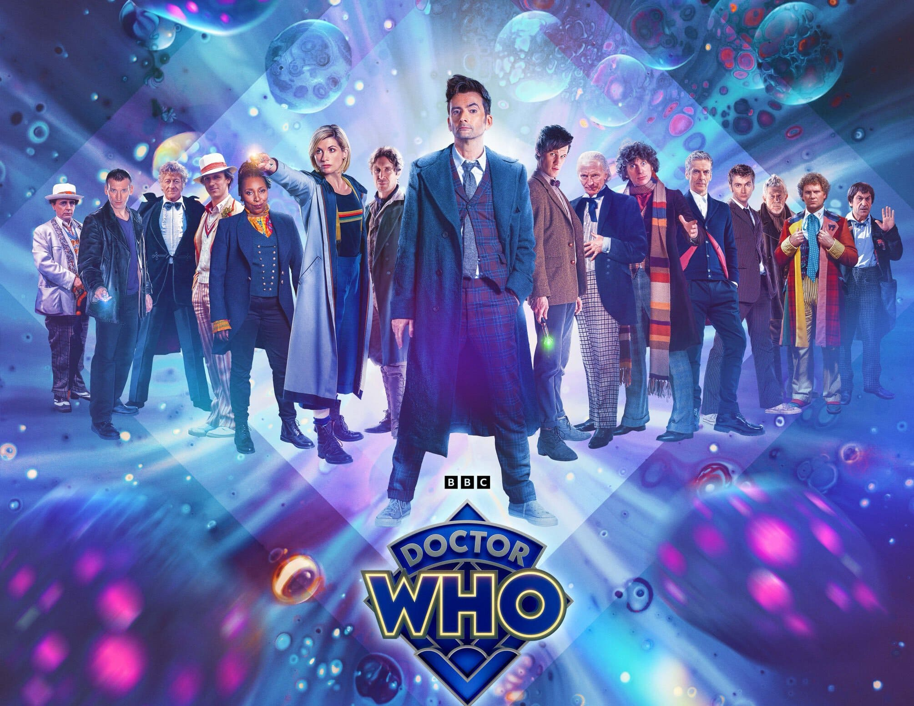
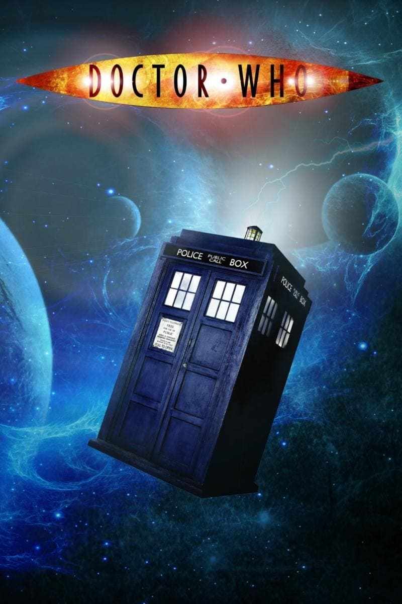

Doctor Who es un programa de televisión que trata de las aventuras de un misterioso hombre conocido sólo como el Doctor. El Doctor viaja a través del espacio y el tiempo en una nave llamada TARDIS, un acrónimo de "Time And Relative Dimension In Space (Tiempo y relativa dimensión en el espacio)". Suele ir acompañado de uno o varios compañeros, la mayoría de las veces mujeres. El tono del programa varía de serio a cómico y de horror gótico al campo de la pantomima. La serie de Doctor Who original se recuerda con cariño entre el público por lo general con monstruos horripilantes (como los Daleks y los Cybermen), siendo pioneros en el uso de la música electrónica y efectos especiales de bajo presupuesto.
Está ambientada en un parque temático futurista cuyas instalaciones cuentan con seres biológicos
programados que pueden introducirse en cualquier tipo de fantasía por muy oscura que sea. Los "nuevos
visitantes" son humanos que pagan ingentes sumas de dinero para internarse en esos mundos y hacer
realidad sus sueños en una experiencia 100% inmersiva. Esto incluye matar, sexo, diversión y
experimentar el oeste americano en primera persona.
Los creadores de dicho lugar tienen algo en lo que pensar: sus criaturas empiezan a revelarse contra
ellos acusándolos de haber creado "la cárcel de sus pecados". La última actualización de su programación
ha consistido en inducirles "ensoñaciones", lo que les ha permitidp experimentar un salto exponencial:
tienen la capacidad de mentir, así que han alcanzado un nivel de abstracción que puede llegar a hacerlos
"iguales" a los seres humanos.
“Kim Shin es un guerrero invencible y un general asignado del antiguo reino de Goryeo. Sin embargo,
cuando regresó de la batalla fue traicionado por el joven príncipe, que por las influencias de su
consejero real, manda a asesinar a Kim Shin. El muere a causa de su propia espada, pero le fue dada una
segunda oportunidad de vivir. Sin embargo, pronto encuentra que es una maldición, ya que esto
significaba ver morir a todos los que ama, sin olvidar ninguna de esas muertes. El único que podría
sacar la espada de su cuerpo y dejarlo por fin descansar en paz, es una chica misteriosa, que puede ver
fantasmas y que sólo se conoce como la novia del Ser Inmortal.